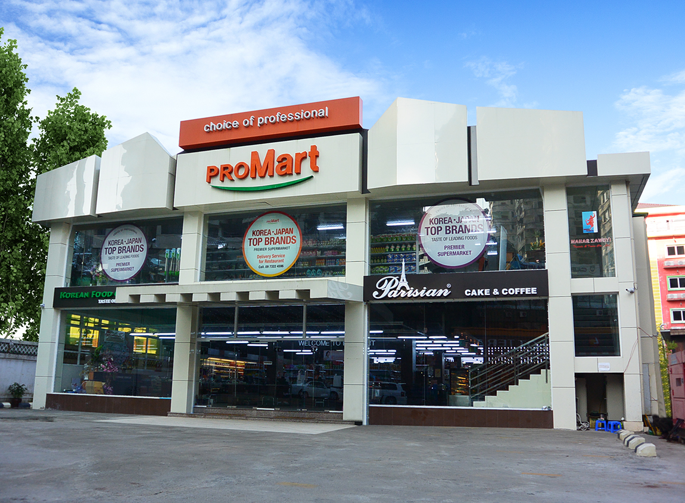

Supermarket
Promart supermarkets
Promart supermarkets have been aimed for conversion from primary production to secondary production. These are specialized store of Japanese products and Korean products. Importing directly from Japan and South Korea
- Bahan Branch Established on 2014. Hlaing Branch Established on 2015
- Sold only fresh, healthy & tasty foods from Korea & Japan which is received the health certificate.


Korean food restaurant also included and Korea Brand Venusta Coffee Machine available. Provide top priority for safety and, serve delicious foods to consumers with friendly and comfortable services.
Services available at ProMart Supermarket
- Gift Voucher available
- Delivery Service
- Restaurant's membership
- Packing services
- Sticker Coupon Services
- Safety Car Parking